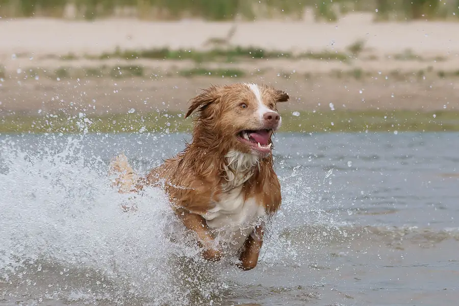

Dog games
Play three quick, original games and pick up real dog facts along the way. Each round ends with a fact card and the source it comes from.

Snack or Nope?
Sort people foods into Safe, Caution or Toxic for dogs, then see the reason and the veterinary source.
Wag Signals
Read a cartoon dog's ears, eyes, mouth, body and tail and decide what it is trying to say.
Fetch Spotter
Time your throw to land the ball by the flag, and find out why a yellow or blue ball is easier for dogs to spot.
What you learn
- Snack or Nope? Which people foods are safe, risky or toxic for dogs, using the same verdicts and veterinary sources as our Can my dog eat this? table.
- Wag Signals: how ears, eyes, mouth, body and tail show whether a dog is relaxed, playful, worried or warning you, based on RSPCA and ASPCA guidance. More in dog behavior.
- Fetch Spotter: why dogs find yellow and blue toys easier to see than red ones, from the American Kennel Club. More in Can dogs see color?
Safe for kids and classrooms
No sign up, no ads, no cookies and no trackers. Your best score is saved only in this browser (localStorage) and is never sent to us. Sound is off unless you switch it on.
Every game works with a mouse, a touchscreen or a keyboard, scales to phones, and respects your device's reduced motion setting.
Games are original works © 2026 Joshua Israel Ventures LLC.